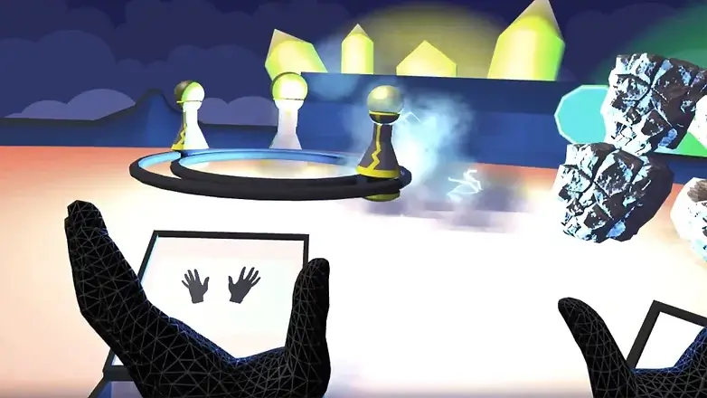

Mia Swart
Gestures of Arcana
This game was made using the Meta Quest (aka Oculus Quest) in a team of 6 over about 8 weeks.
In PROD222, students can work on projects for clients in the industry. Our client wanted to test how well hand gestures could work as a mechanic in VR games. Can the experience be robust, satisfying, and intuitive? We believe it can!

My work
- I wrote code that could match information about the player's current hand gesture (how each finger is rotated and where it is) to a list of known gestures. This was extended to see if a hand changed from one known gesture to another.
- Along with this I wrote code that allowed the player's hand gestures to be recorded. This makes it easy for a developer to define a new sequence of gestures.
- The gesture detection code was fine-tuned to be reasonably accurate.
- I made the tutorial videos I think
- Carefully documented how this code worked and how to use it, so our client could easily use it in any future work of theirs.